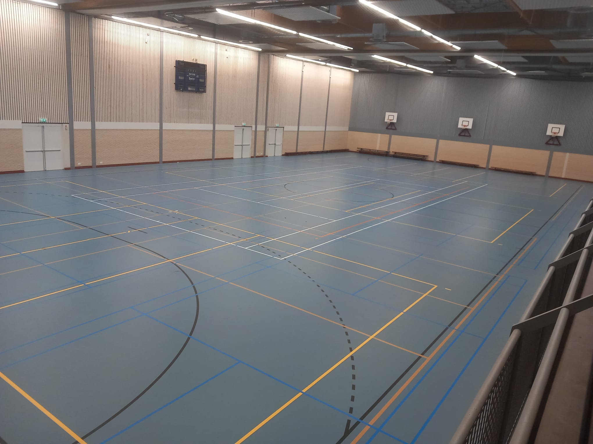

de shuttelers
de shuttelers
algemene info
algemene info
Spelregels:
Shuttle Slaan: De shuttle moet met een racket geslagen worden, waarbij nauwkeurigheid essentieel is voor snelheid en richting.
Richting en Veld: De shuttle kan in elke richting worden geslagen, zolang hij over het net gaat en binnen het speelveld landt. Bij enkelspel gebruik je de binnentste lijnen, en bij dubbelspel het volledige veld.
Begin van de Wedstrijd: Een wedstrijd start met een service naar het schuin tegenoverliggende veld. Het spel gaat door, tenzij de service in het net of uit is.
Punten Systeem: Een punt wordt verdiend wanneer de shuttle correct landt; als hij uit landt, krijgt de tegenstander het punt. De eerste die 21 punten haalt, wint de set, met een minimum verschil van 2 punten.
Deze regels bevorderen een eerlijke en competitieve sfeer waar vaardigheid en strategie belangrijk zijn.
Benodigdheden:
Racket: Een goed gebalanceerd racket is noodzakelijk, aangepast aan je speelstijl en niveau. Controleer regelmatig de snaarspanning voor optimale prestaties.
Shuttle: Er zijn verschillende shuttles, zoals synthetische en veren, die geschikt zijn voor respectievelijk recreatief en competitief gebruik. Zorg voor goede kwaliteit.
Net: Een stevig net is essentieel voor het spel. Het moet goed gespannen en op de juiste hoogte bevestigd zijn om aan de regels te voldoen.
Met deze benodigdheden ben je goed voorbereid om te trainen en te spelen, en kun je je vaardigheden ontwikkelen terwijl je geniet van het spel!
meer info
Sporthal Trias:De trainingen worden gehouden in Sporthal Trias, een moderne sportfaciliteit aan de grens van Krommenie en Assendelft, goed bereikbaar voor zowel beginners als ervaren sporters. De hal biedt diverse trainingsruimtes en faciliteiten voor een veilige en plezierige sportervaring. Voor informatie over bereikbaarheid kun je de pagina raadplegen.
Kijklessen:Nieuwsgierige geïnteresseerden in badminton zijn welkom om drie gratis kijklessen te volgen. Dit biedt een kans om de basisvaardigheden te leren en de club te ervaren. Na deze lessen kun je lid worden, wat toegang biedt tot trainingen, competities en een gezellige community.
Benodigdheden:Tijdens de trainingen zorgen we voor netten en shuttles. Er zijn ook rackets beschikbaar, maar als je lid wordt, vragen we je om zelf een racket mee te nemen. Dit bevordert je persoonlijke ontwikkeling en zorgt ervoor dat je altijd met een passend racket speelt. We kijken ernaar uit je te verwelkomen!
meer info
Trainingsschema:
Dinsdag:
18:45 - 20:15 uur: JongerenDeze sessie is gericht op jongeren die hun vaardigheden willen ontwikkelen. De training focust op techniek, tactiek, spelplezier en teamwork, met uitdagende oefeningen en wedstrijdsituaties. Het is een uitstekende gelegenheid voor jongeren om nieuwe vrienden te maken in een ondersteunende omgeving.
20:15 - 21:45 uur: VolwassenenVolwassenen van alle niveaus zijn welkom om hun spel te verbeteren. De training omvat zowel individuele vaardigheden als teamstrategieën, met een mix van intensieve oefeningen en plezierige wedstrijden. Dit biedt niet alleen fysieke activiteit, maar ook de kans om sociale contacten te leggen.
Zondag:
15:00 - 16:30 uur: KinderenDeze training is speciaal voor kinderen en richt zich op het enthousiasmeren van jonge spelers. Via speelse oefeningen leren ze belangrijke technieken, coördinatie en teamwork, met de nadruk op plezier en sportiviteit.
Alle trainingen worden geleid door ervaren coaches die gepassioneerd zijn over talentontwikkeling en sportiviteit. Iedereen is welkom, ongeacht het niveau, en er is altijd ruimte om te groeien en te genieten van de sport. Nieuwe leden zijn van harte uitgenodigd om een keer langs te komen of mee te doen!
meer info
hier vindt je de makkelijkste manieren om de sporthal te bereiken
meer info